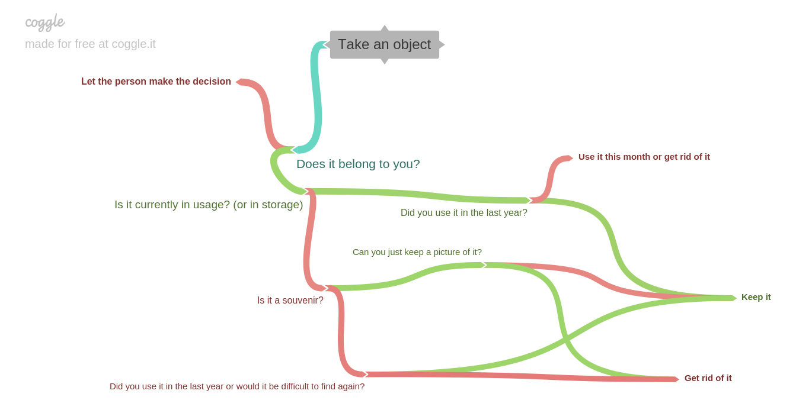

Google Doc | Facebook post | Author: Mati Roy | Created: 2018-07-26 | Published: 2019-04-27 | Updated: 2019-04-27 | Confidence: medium | Importance: 4 | Originality: low
Note: You can hire me to help you get more minimalist and organized. I have tools to rapidly scan papers / pictures and transfer VHS / CDs / etc., and I can help you get organized digitally and set up backups.
In my experience, people often overvalue holding on to objects.
I’m not sure how to measure the cost of owning something exactly, but I feel like there are various costs that are rarely taken into account. Those costs include:
Potential lies we tell ourselves:
Another barrier to getting rid of objects is that the cost is immediate: both the time it takes as well as the emotional work; whereas the benefit is spread over a long period of time.
I like Pastabagel’s mindset on this (source):
Coveting possessions is unhealthy. Here's how I look at it:
All of the computers on Ebay are mine. In fact, everything on Ebay is already mine. All of those things are just in long term storage that I pay nothing for. Storage is free.
When I want to take something out of storage, I just pay the for the storage costs for that particular thing up to that point, plus a nominal shipping fee, and my things are delivered to me so I can use them. When I am done with them, I return them to storage via Craigslist or Ebay, and I am given a fee as compensation for freeing up the storage facilities resources.
This is also the case with all of my stuff that Amazon and Walmart are holding for me. I have antiques, priceless art, cars, estates, and jewels beyond the dreams of avarice.
The world is my museum, displaying my collections on loan. The James Savages of the world are merely curators.
As I am the curator of their things, and thus together we all share the world.
Also, I see most things I use just as tools. If my collective was to disband, all communal tools in the house could be auctioned off, and (almost?) no objects would be emotionally difficult for me to let go.
Also, I like the aesthetic (and efficiency!) of the sharing economy: a lot of tools I don’t need to own, I can just rent them when I need them.
I suggest you make a graph of heuristics to follow when deciding whether to keep an object. Then you can go through objects by categories.
Here’s a simple sketch of some of the questions I ask myself.

Link of the decision tree: https://coggle.it/diagram/XLqQWr99BlLVLqLf
Possible debiasing questions to avoid the status quo bias:
The smallest storage space I found in Montreal is 17 CAD / month: https://www.montrealministorage.com/en/reservation. So that represents about 17*12/0.04 ≈ 5000 CAD to store this amount of objects indefinitely (not counting the other costs). ↩